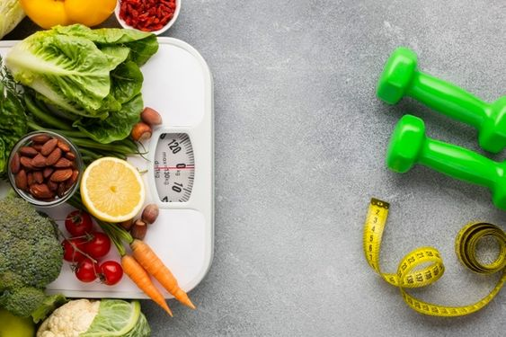

Destaques

Explorando Novos Sabores
Descubra novos sabores sem comprometer sua dieta!
Relação Positiva
Cultive uma relação positiva com todos os aspectos relacionados à alimentação.

No Pain, With Gain!
Perda de peso com mais facilidade e menos restrições.